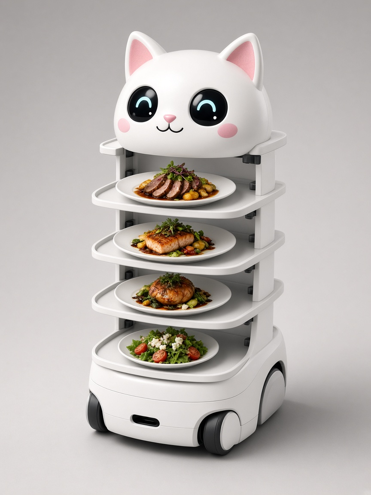
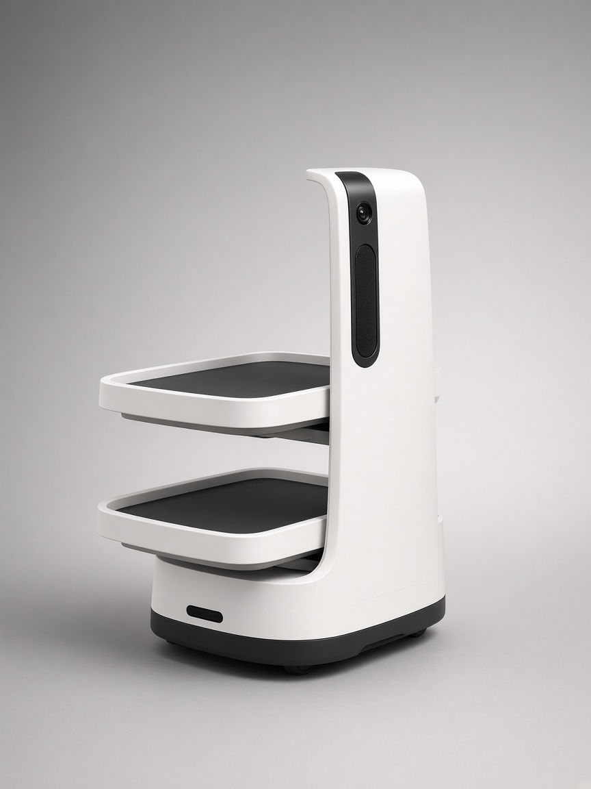

Australian market catalogue
Selected from Pudu and Keenon models most frequently stocked by Australian hospitality sellers (AGC Equipment, RoboBuddy, PC Market, KW Commercial, Automiq, Robots Australia and others). Prices are public shelf ranges — final quotes depend on configuration, GST treatment and install.

Pudu Robotics
Australia’s most recognised restaurant delivery robot — cat-inspired guest interaction with four trays. Already running in Sydney venues suc…
Approx. A$19,900 – A$21,452
View details
Pudu Robotics
Premium BellaBot class with stronger advertising and interaction features for venues that want theatre plus reliable plate runs.…
Approx. A$23,100
View details
Pudu Robotics
Compact 3-in-1 host robot with a large advertising screen — greets guests and still delivers trays. Ideal entry model for mall and CBD resta…
Approx. A$11,900 – A$16,062
View details
Pudu Robotics
Pro reception robot with ad display — dual SLAM, smart tray detection and enhanced voice interaction for high-traffic Australian venues.…
Approx. A$16,500
View details
Pudu Robotics
Next-gen universal delivery workhorse — VSLAM+ navigation, three adjustable trays, and the most common everyday runner configuration on Aust…
Approx. A$14,990 – A$16,159
View details
Pudu Robotics
High-volume runner with large compartment and dish-collection modes — the hotpot, buffet and banquet choice on Australian floors.…
Approx. A$22,638 – A$30,000
View details
Pudu Robotics
Premium versatile delivery with optional enclosed doors, laser projection interaction and up to five trays — suited to fine dining and hotel…
Approx. A$23,000 – A$28,000
View details
Keenon Robotics
Keenon’s high-load dinerbot — 40 kg across adjustable layers and up to ~18 h battery. Widely listed by Australian Keenon dealers including A…
Approx. A$15,913 – A$16,093
View details
Keenon Robotics
Delivery and marketing dinerbot with a large ~23.8″ display — used by Australian food-service sellers for high-visibility restaurant floors.…
Approx. A$20,147 – A$20,375
View details
Keenon Robotics
Compact Keenon dinerbot for tighter Australian dining rooms — passes aisles around 55 cm with a 20 kg open-tray payload.…
Approx. A$15,913 – A$16,093
View detailsNeed a recommendation?
Tell us covers, cuisine and aisle width. Robopearl recommends from this live Australian catalogue and books a 20-minute demo between services.
Make an enquiry